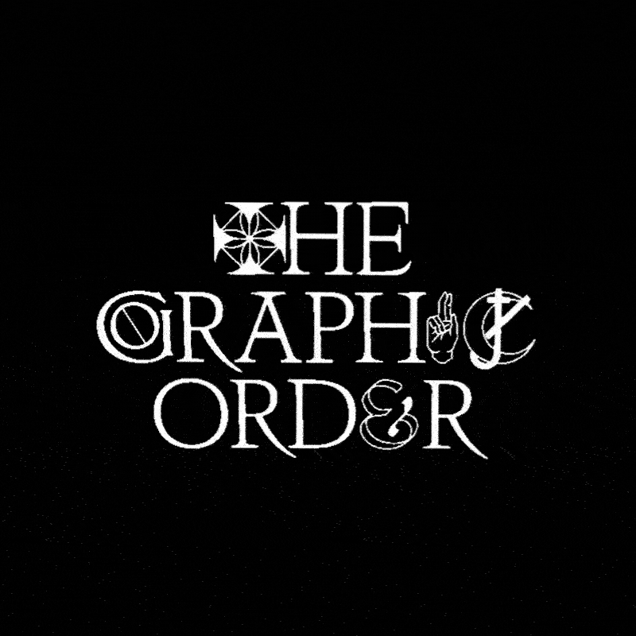
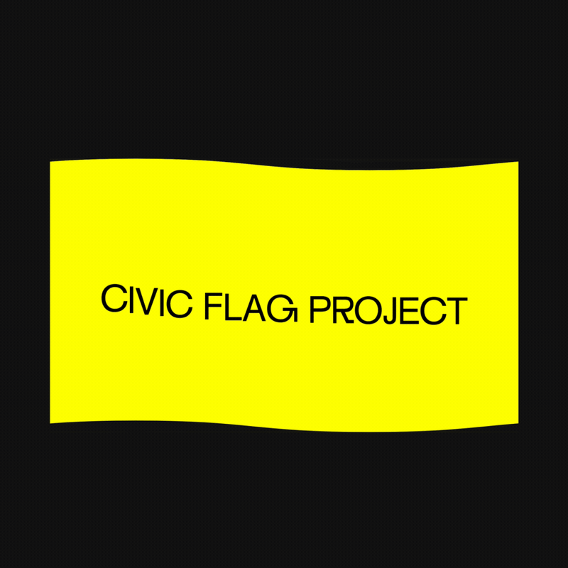
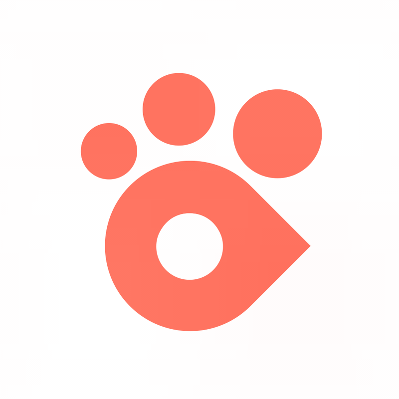
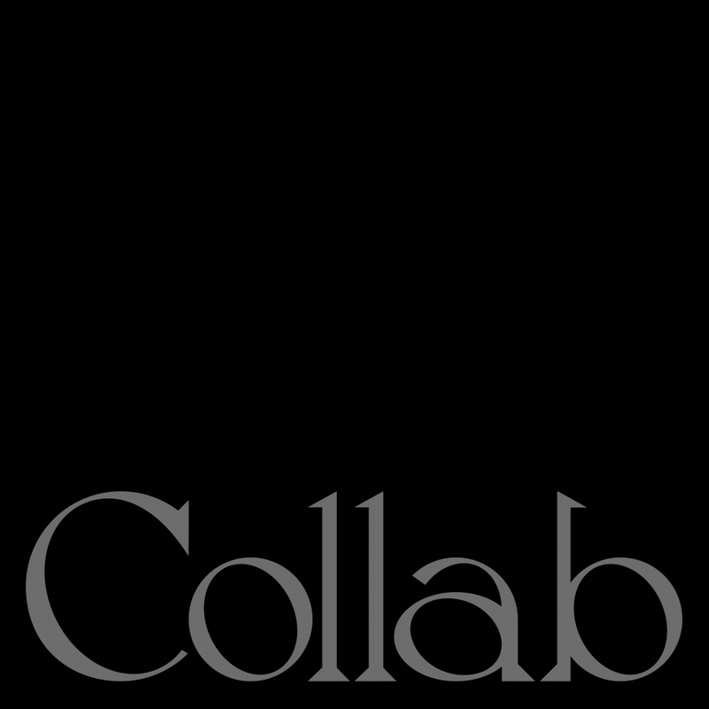

Mostyn Griffith
Index
Branding
Interface
Mostyn is a flexible designer. He is interested in social equity, inclusive business, and the potential for design to bridge the divide between enterprise and cultural production.
He likes to make work for but is not limited to: artists, non-profits, student associations, branding studios, multinationals, startups, as well as his family and friends.
He is currently pursuing a BFA in Graphic Design at the Rhode Island School of Design in the graduating class of 2018. You can contact him here by email.
You can find him on Instagram or even on that other website known as LinkedIn. Otherwise here is his resumé.
The Graphic Order
The Graphic Order is the identity for the 2018 RISD Graphic Design Senior Show. The rationale behind the idea came when I and a group of seniors undergraduate students remarked on our cultish relationship to the practice of graphic design. We felt an eery obsession with the rules that we were taught combined with a religious fervor towards historical icons in graphic design lended well to a cult-like theme.
I, Greta Skagerlind, and Ishaan Bose Verma were responsible for creating the identity and branded assets for the show. We invited our fellow senior graphic designers to create their own personal symbols in place of traditional gallery labels.
We found that this set of symbols also allowed for playful configurations when set inline with typography. Ishaan Bose Verma went to work in creating a typeface that combined our classes' symbols with Pauline Le Pape's typeface, Tacite. We used this Frankenstein-esque typeface liberally throughout many of the show's branded assets.

DS1 Flag Project
There are four unused flagpoles on the Providence River, located outside RISD’s Design Center. First-year students in RISD Graphic Design, who take courses that look out onto the public space, have come up with proposals for flags — symbols meant to galvanize the public in some aspect of its shared experience. The flags symbolize a range of the following: community, divergent or shared histories, civic pride, change and growth, hope (the state motto) or specific elements from the area or state. These designs are here to stir up a conversation with the City and to speak to the public in lieu of (and perhaps in advance of) printed flags.
This website was done in collaboration with Ethan Anderson, and can be accessed here.

Rides
RIDES is an autonomous public transportation system prototyped by a team of 24 undergraduate design students during the 5-week RISD Industrial Design Wintersession course, Autonomous Vehicle Futures, instructed by MID candidate Jeremy Bass.
My role in this project involved leading a team of four design students in the creation of user access points. This included generating interfaces across multiple platforms: a smartphone app, ticketing kiosk, and finally an integrated SMS/Messenger chatbot.
One of my other responsibilities included creating the brand identity for the system. This involved devising the naming, logo, colors, typography and various interface assets.
RIDES is an acronym that stands for Rhode Island Driverless Electrical System. Brand positioning for RIDES followed our desire to appeal to local riders in the Providence area.
In prototyping the layout of the application, we decided to begin with a familiar map UI as a landing screen. This reflected our desire to use the core application as an opportunity to emphasize visual components and isotypes as opposed to a text-heavy approach in order to allow users of various language backgrounds and levels of reading comprehension to be better accommodated into the RIDES ecosystem.
By creating both a graphical interface in tandem with a messaging interface users can choose to use either one exclusively without losing key functionality. However, by using them together the user will experience both robust utility and personability in wayfinding.

Public transportation is a service for all; therefore access points must be designed for use by people of varying ability and economic background.
RIDES' mascot is Rhody, a virtual wayfinding assistant modeled after the state bird, the Rhode Island Red Rooster. Besides being the brand's personality, Rhody is central in RIDES' mission to creating an equitable user experience.
What came out of this driving principle of accessibility was not only the core application, but a conversational AI available across multiple platforms.

The first video above illustrates The RIDES Application which includes a familiar map UI and wayfinding functionality. This interface is designed for users with limited linguistic or hearing capacity since it emphasizes visual interactions through the use of icons and isotypes.
The second video shows an in-app chat interaction with Rhody. In this example Rhody recognizes a routine route that the user takes and asks if they would like to schedule accommodations in the future. The chat functionality allows users that are visually impaired or more comfortable with guided instructions to get to a desired location.
The third and fourth examples illustrate the flexibility of the wayfinding ecosystem. Rhody can be accessed from third-party messaging systems such as Facebook Messenger or iMessage or even via legacy systems such as SMS text messaging.


More documentation and process to come!
Museum of Sex

The Museum of Sex is a visual identity project created for Richard Rose's Brand Identity course at RISD. This project involved taking an existing museum's brand identity and revamping it in its entirety.
The website utilizes a section of the logomark as a viewport for which the carousel moves through. I felt that using the mark in this way evoked a sense of voyeurism which is related to both sex and the notion of being a viewer in the museum gallery.


For a brand extension, I decided that the Museum of Sex could partner with Spotify to advertise an exhibit on the history between music and sex. Spotify would feature interactive album art in which you can learn about the artist and the exhibition at the Museum of Sex.
Users would also be able to use their phones to scan certain tags on the wall of the museum to hear a specific song and receive information on that particular artist during a guided audio tour.
The following images contain alternate logo designs and other remaining pieces of the brand identity process.


Collab Campaign
Collab is a campaign that focuses on creating a solidarity among workers of all backgrounds.

The primary mark is an abstraction of two shirt collars. This is because different sectors of labor can be grouped by a different color collar. (e.g. Blue for industrial work and Pink for care and service work.)
For the logotype, I hand drew the lettering to match the sharpness of the collar logos and motifs. I chose to make it a serif to contrast the heaviness of the bold logo and headers.

The campaign website features information on each of the industries as delineated by their respective collar color. Design decisions reflected in the need to create a cohesive space around labor unity and bringing a sense of dignity to all levels of work.
The first campaign initiative is the Worker's Voting Fund. Many socioeconomically disadvantaged workers are not able to vote since they live paycheck to paycheck. This initiative would fund the expansion voting locations to economically disadvantaged neighbourhoods and workplaces.

Evan Roth

LANDSCAPE WITH A RUIN is a photography series by the artist Evan Roth that documents the often remote settings where the internet submarine cables meet the land. The following artist books are an exposition of Roth's photos from recent trips to Hong Kong, China and Capetown, South Africa.
The first book features Roth's six day trip through the remote parts of Hong Kong's peninsula. The second book details Roth's five day trip through various parts of Cape Town, South Africa.


Flare

I was approached by two students from Brown to help them build FlairTime, a social app centered around creating events and having users collaboratively document events. This included a total rebranding of the app, changing its name to Flare, and a close collaboration with the developer on the user interface of the application.
The rebranding process involved changing the name of the app from Flairtime to Flare, which introduced more energy into the brand. I thought that the act of creating and sharing an event with friends could be associated with the image of launching a flare.
The logo was changed from a simple blue flame to a mark that contains both the "F" in Flare as well as a flare in the counterform.
UX Issues
The main issues with the original Event Tile user interface were problems with the visual hierarchy of user's content, event information, and a general lack of consideration for driving user interaction.
UX Solutions
The new Event Tiles optimize a user's viewing experience by being able to remove unecessary modules when certain data is not present. An example of this is if less than 5 people are joined, then the Guest Bar does not appear. Early on in an event, this allows the action bar and gallery to be more visible to entice both viewing and interaction.
These modules have been designed to increase interaction by setting larger action icons within the gallery pane alongside user content. What this does, especially early on during an event, is to entice users to fill the gallery with their content.

Content begins from a user uploading media via their camera or camera roll. They would then be able to post content on the Event Page which features a gallery of guests' content as well as additional information about the event. The Gallery View allows users to quickly scroll through all the highlights of an event.
Find Flare here on the app store.

Shuffle
Shuffle is the ultimate dating app. Since nearly every dating site or app uses only a few different parameters to delineate themselves from others, we decided that online dating could be expanded to a network in which users could create their own dating channels. Users could then shuffle through a diverse pool of dating channels with the ease of a swipe.
Done in collaboration with Ethan Anderson, Phoebe Morrison, and Morgan Cheatham for Chris Novello's Computer Utopias course.


IHS Markit
The first project I was involved in at Salt Branding was creating a new identity system for an international merger between two large data analytics companies, IHS and Markit. I was tasked with creating the primary logo and with my supervisor devised a system that could be applied onto items such as booklets and websites.


Politicoin

Politicoin is a website that attempts to shift the cryptocurrency conversation away from its traditional associations of free market economics into the space of politics and representative democracy.
Visit the website here.

Brown Finance Club
The Brown Finance Club contracted me to both brand and create their website. For them, I hand drew a wordmark beginning with Bookmania Light as a starting reference point. From there, I decided that a gradient mix between Brown University's red and a cool blue evoked the shifting relationships and dynamism of the economy at large.
Bad Precedent
This is a publication centered around the unconstitutional internment of Japanese citizens during World War II. A reminder of the xenophobic hysteria and racism that we as a nation can commit. The publication features a compilation of interviews with various Japanese-Americans who lived through the internment.
All photographs taken by Ansel Adams and sourced from the Library of Congress.


Epigenia
I and Adrian Medina decided to collaborate on an idea that involved ecology, urban-planning, and world-building. We created a fictitious island-nation-state titled Epigenia as a means to communicate a green transition story.
We decided to flesh out one of the pivotal characters in the narrative, Grete Li, a benevolent entrepreneur set out to overhaul the failing, unsustainable nation of Epigenia, turning it into a prosperous eco-state. In addition to this I created a visual timeline (displayed above) to accompany the interview as a means to detail pivotal events in time.
The final configuration for this piece was a projected installation for Design Studio 4 taught by Benjamin Shaykin.
RAID
These figures and ephemera were made for the RISD Asian Intersections and Diaspora (RAID) club. They were created and handed out to attendees of the first general meeting. Done in collaboration with Greta Skagerlind.
DGA – Right Now
Music video for the Dopest Gringo Alive's single "Right Now Romantic Song". 3D objects created in Maya and animated/textured in Max MSP.
Cornell Sustainability
The Cornell Sustainability Consultants contracted me to design an identity for them. I wanted the logo to reflect notions of the circular economy and feedback cycles.
This set of posters were designed for Cornell activist group, Climate Justice Cornell. The movement set out to protest against the administration's decision to abandon former Cornell President David Skorton's Carbon Neutrality plan for 2035.
Various Posters
大鼻
Pity